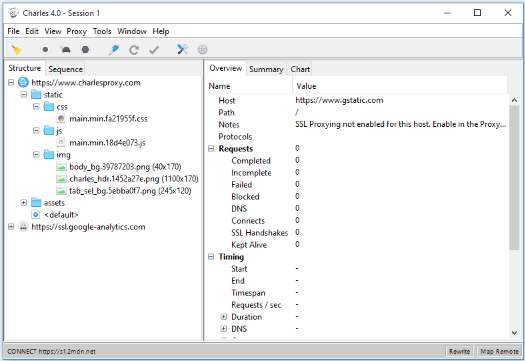

Charles is an HTTP proxy / HTTP monitor / Reverse Proxy that enables a developer to view all of the HTTP and SSL / HTTPS traffic between their machine and the Internet. This includes requests, responses and the HTTP headers (which contain the cookies and caching informatio
Официальный сайт: https://www.charlesproxy.com/

Применение:
Created with the Personal Edition of HelpNDoc: Write eBooks for the Kindle